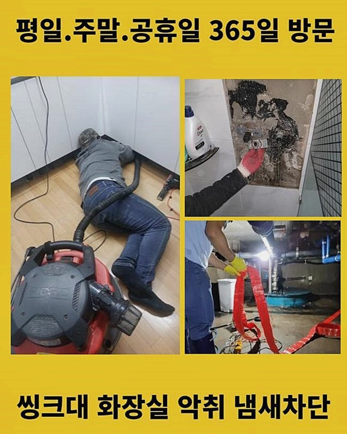
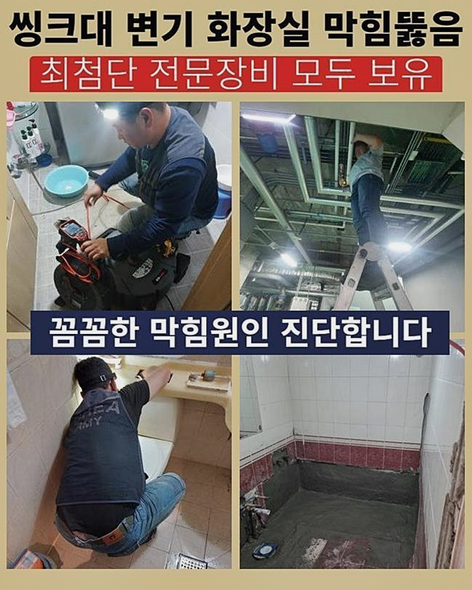
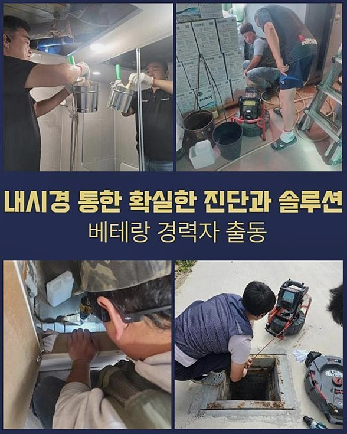
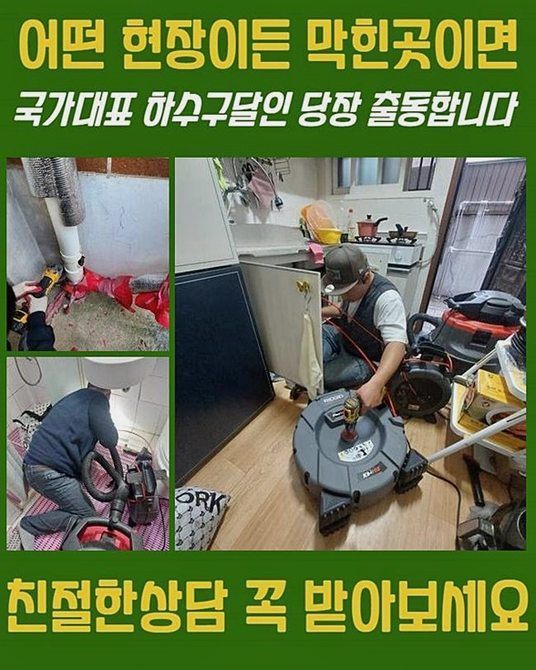
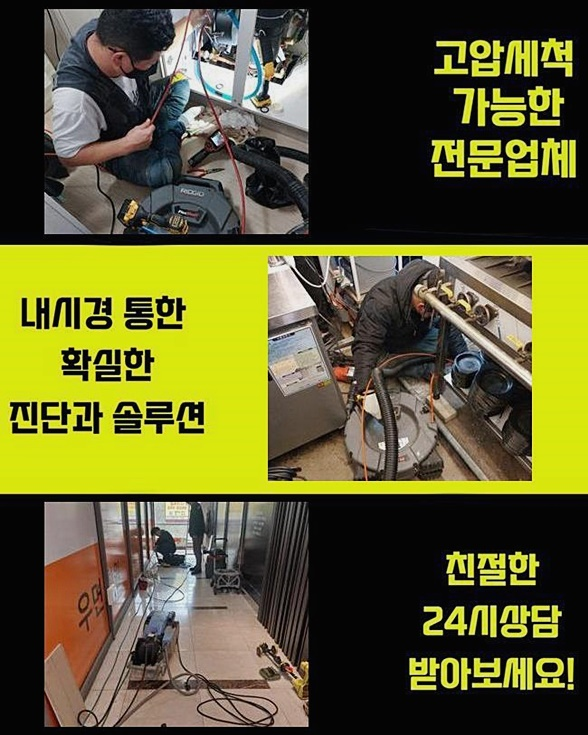
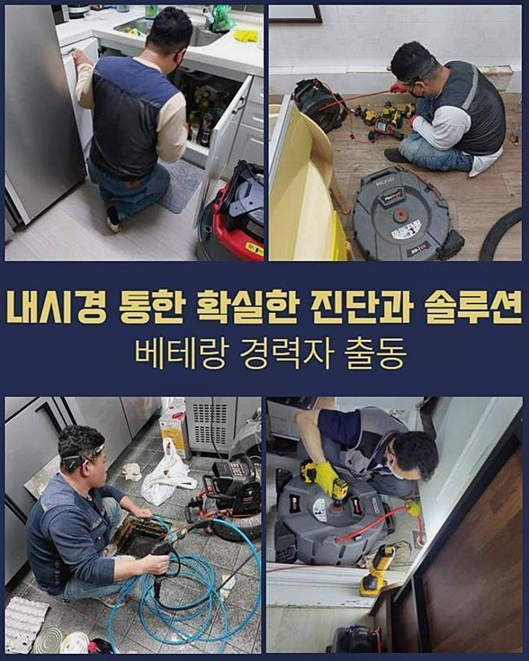
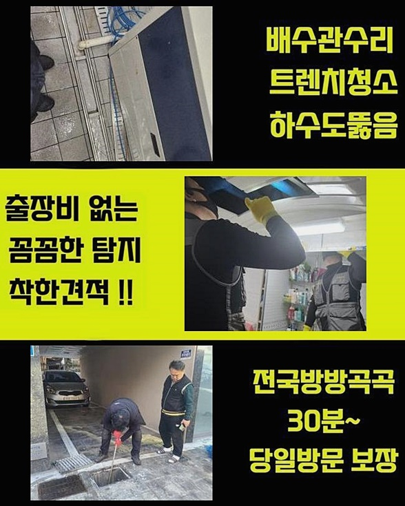

🏠 인천 가정동씽크대역류 검암경서동 횡주관청소 통수전문
인천 싱크대막힘 전문 시공 후기

📋 작업 개요
- 위치: 인천
- 서비스 유형: 싱크대막힘, 하수구막힘, 배관막힘, 누수수리, 역류해결, 뚫는업체, 배관청소, 악취차단
- 작업 일시: 2024. 7. 6. 10:14
- 업체명: 하수구수사대 (010-5615-2118)
🔍 문제 상황
인천 가정동씽크대역류 검암경서동 횡주관청소 통수전문
욕실 문턱을 넘자마자 왜인지 구릿구릿한 냄새 분자가 실내로 올라오는 걸 간혹 관찰하게 되면 배관에 구멍이라도 난거 아닐까 의아함이 증폭되실 겁니다
확산되는 냄새문제와 더하여 심지어는 통수가 원만하지 않다가 시간이 흐르면서 결국 욕실물의 이동 장애로 일을 키우게 되는 것이죠
어떤 부위가 문제인지는 첨단 장치를 작동시키지 않는다면 예상하는 것도 한계가 있으니 배관에 대한 프로에게 서비스를 신청해서 극복을 하는 방향이 바람직하다 하겠습니다
공용 화장실의 바닥에 배수구가 말썽을 부려 전화를 주셔서 직접 방문드린 곳인데 저번 주 부터 사용용수가 눈에 띄게 느리게 배출 되었다면서 말씀을 해주셨습니다
욕실의 수돗물을 쓰시고 약간만 시간이 지나면 모두 흘러가 버리니 그게 일반적이라 여기며 약간 대기를 해보자 여겼는데 외출 후에 귀환해서 보았더니 전에 고인 물 그대로 고여있는 모습에 이건 심각하구나 절감하셨다 해요
곧바로 욕실로 들어가 꼼꼼히 보니 수돗물이 거슬러오르고 있었고 이동이 마비된 상황이었고 진입 경로까지 물이 찰랑대는 중이던 상태에 놀라긴 했네요
빨아당기는 석션기로 고인 물을 덜어내 드리면서 작업할 수 있는 환경을 만들고 물기는 기본이고 오염원들이 다량 검출됐어요

🔎 원인 분석
💡 전문가 진단: 정밀 진단 장비를 사용하여 슬러지의 고착 여부를 판명하고 타격/세척 작업을 실시했습니다.
사태가 가장 심각하던 통로 차단의 기점은 전혀 나아지지 않은 상황이라 배관 전용 촬영 기구로 진단하고 현황 파악을 통한 정보로 티끌하나 없이 깨끗하게 정돈을 이어가기로 했습니다
이러한 습식 청소기는 예상치를 훌쩍 뛰어넘는 우수한 파워가 있는데 긴 노즐을 유입시키고 빈틈은 패브릭이나 손바닥 등으로 막아서면 심도 깊은 배관에 달라붙은 이상물질도 모조리 바깥으로 뺄 수 있어요
흡수력만 믿고서는 이물질들을 전체적으로 처리하기에는 제한되는 부분이 있으므로 좁은 물길만 내주고 내시경을 유입시킨 후 디테일한 관측을 해주지요
욕실막힘을 만든 요인이 무엇인지 정체에 따라서 적용하는 청소장비도 상이해 지니 시행착오를 줄이려면 뭐 때문인지 지적하는게 우선 과제랍니다
본 내시경 장비는 바닥부에서 진입시키면 옥외로 나가는 영역까지 내측 상황을 돌아볼 수 있게 해주며 육안감별이 힘든 잔금같은 파손 내역을 알게하니 청소장비를 갖다대기 전에 문제점을 판단하는데 없어서는 안될 기능성을 가졌죠
전체진단을 마쳐보니 생각보다 얕은 깊이에서 몰탈 반죽같은 이물질이 엉겨붙어있는 모양이었고 더 깊이 내려가보니 끈적한 점액성의 기름기가 군집을 이루고 있었죠
석회가 여기에 끼인 리노베이션 등의 작업을 시행하면서 레미탈이 안으로 유입되고 고여서 고체화가 되는 곳들이 한두군데가 아니었어요
일반 수도에 내포된 무기염류 성분들이 흘러내려간 각종 찌꺼기와 조직화가 되면서 벽에 적체된 레이어가 폭증을 이어가다가 결국 화장실의 막힘 이슈가 나타나기도 해요

🔧 작업 과정
진입로 초반부에 있는 견고한 석회층은 덩어리를 희석하게 돕는 전문 약제를 넣어서 분해 과정을 거친 후에 용해되면 그제서야 물을 내려보내는 과정으로 연결고리를 풀어줘서 없애기로 했습니다
시멘트층이 얼마나 딱딱하고 밀집된 구조인지 여러 고객님들도 감지하실 수 있는데 회전축으로 돌아가는 스케일링 도구라거나 스프링 장치라고 해도 과하게 활용했을 때는 배수로에 스크래치가 생겨요
견고하게 응겨붙은 부분을 부드럽게 소강시킨 다음에 본 스케일링에 돌입하면 쉽게 무결한 환경 조성까지도 이행할 수 있습니다
거대한 벽과 같던 석회를 덜어내 주고 나면 더 깊숙히 부착된 각종 슬러지와 세제같은 찌꺼기까지 긴 경로에 해당하는 물질을 긁어내는 스케일링 업무를 수행해요
저희가 쓰고 있는 회전력 기반 샤프트를 관로로 넣어주고 나면 원심력으로 회전하면서 찐득한 이물질부터 말라붙은 돌덩이까지도 부드럽게 쪼개줄 수 있습니다
어떤 크기의 배관이라도 처리해 낼 수 있도록 고안이 된 고기능의 툴이니 이 단단한 노커가 움직여도 우려하지 않고 시공을 이어갈 수 있으며 노즐이 얇고 길어서 내부까지 유입이 이뤄지니 깨끗한 청소가 이뤄져요
샤프트를 투입하여서 업무를 이어갈 시에는 내시경카메라를 같이 넣어 실시간 관찰을 하면서 오염원이 어느 쪽을 중심으로 누적되었나 확인하여 잔여분이 남지 않도록 정화 업무를 도맡아 드려요
욕실 밑에 깔린 배수관은 떨어진 세포층과 머리칼이 오일성분과 맞붙어서 침전물을 조성하기 때문에 거름망을 하수구 위에 신설하는 것을 강력히 추천드립니다
만약 식물의 흙이 떠내려갔다면 기름 분자에 혼재된다면 장비가 튕겨질 정도로 강화가 된 채로 끈적하게 배관에 붙어 양이 확충되다가 압력을 높여가다가 누수 사안을 야기시키는 심한 경우도 있답니다
소거하다가 끌어올려서 헝겊으로 겉부분을 수습하며 약간씩 정돈시켜 나갔는데 통로가 점차 드러나는 것이 확인되었습니다
빠짐없는 스케일링 업무를 이어가면 배관 벽이 본래의 표면이 노출되므로 잔수와 오물이 섞여있더라도 붙으려다가도 금세 떨어져서 바깥으로 쭉 운반이 되니의 배수 장애가 있다면 맞춤형 청소 업무를 통해 깔끔하게 해결이 가능합니다
배관 내부에 남은 습식청소기를 재가동하여 깨끗이 흡입해버리고 액체가 아예 사라진 바람에 건조해서 제거가 까다로워지면 붓는 과정을 거치면서 꼼꼼하게 클리닝 단계를 수행해 나가요
이 석션과 샤프트 세트는 모든 배수로를 세정해 나갈 때 궁합이 매우 뛰어난 관계인데 이물을 파쇄하고 나머지는 끌어올리게 됩니다


✅ 작업 완료
전체 배관청소를 마치고 내시경장치로 최종 점검을 이어가며 안에 더는 이물질이 소거된 게 확실한지 봐주고 물길이 잘 열렸나 물을 켜봐요
많은 수량을 흘려보내서 고질적인 배수 장애가 개선된 점을 확신해 주고서 시공마감을 알렸으며 나중에 욕실을 이용하며 명심해야 하는 사항도 같이 전달드렸답니다
강한 석회질로 인해 들어찬 관로 내부일 경우는 셀프로 열심히 작업해도 해결이 쉽지않는데 방문당일 뚫어 문제를 없애주는 노하우가 출중한 숙련가가 필요하시면 저희 번호로 연락주세요
기타 궁금한 사안들이 해소되지 않았다면 언제든지 질문 주셔도 좋으니 망설임 없이 전화주세요!




⚠️ 베란다 누수 및 방수 관리 방법
- ✅ 비가 많이 올 때 창틀 주변이나 아래층 천장에 얼룩이 생기는지 정기적으로 확인해 보세요.
- ✅ 우수관 주변 실리콘 마감이 들뜨거나 깨진 틈새가 있는지 손상 여부를 수시로 체크하세요.
- ✅ 베란다 바닥 타일의 줄눈(메지)이 소실되면 그 틈으로 물이 침투하여 누수가 유발됩니다.
- ✅ 누수 의심 증상 발견 시 방치하면 아래층 손실이 커지므로 즉시 전문가의 진단을 받으십시오.
💡 핵심 정리
- 확실한 장비 작업(내시경 점검 및 샤프트 스케일링)으로 원인을 뿌리 뽑습니다.
- 작업 후 1년 이내에 동일한 부위 재발 시 100% 무상 A/S 서비스를 보장합니다.
- 서울 · 경기 · 인천 전 지역에 24시간 언제든 긴급 출동할 수 있도록 항시 대기 중입니다.
❓ 자주 묻는 질문 (FAQ)
🚨 인천 싱크대막힘 문제로 고민이신가요?
정확한 원인 진단과 확실한 시공으로 재발 없는 해결을 약속드립니다.
24시간 긴급 출동 | 서울 · 경기 · 인천 전지역 | 1년 내 재발 시 무상 A/S